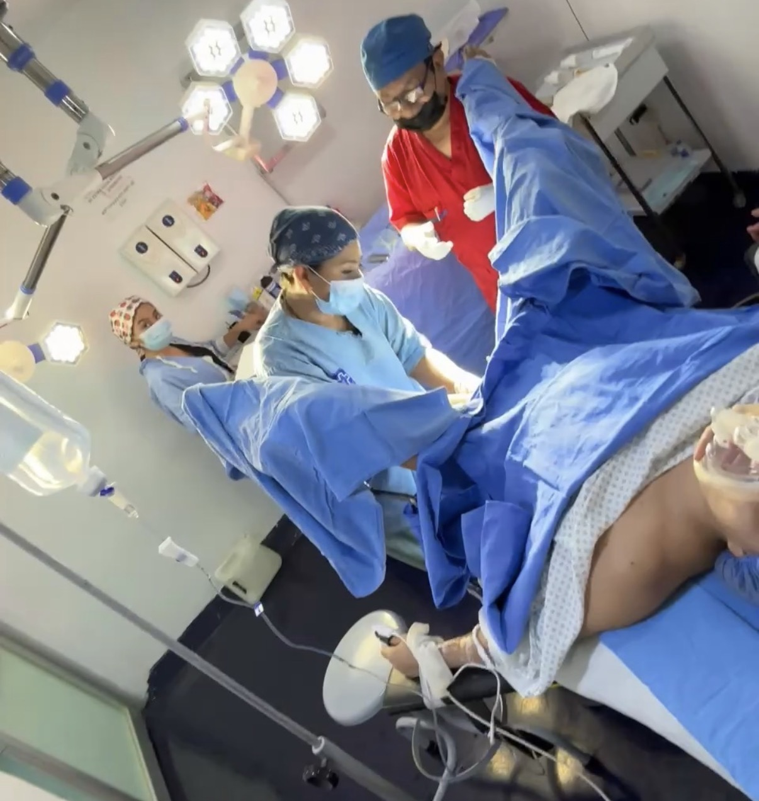
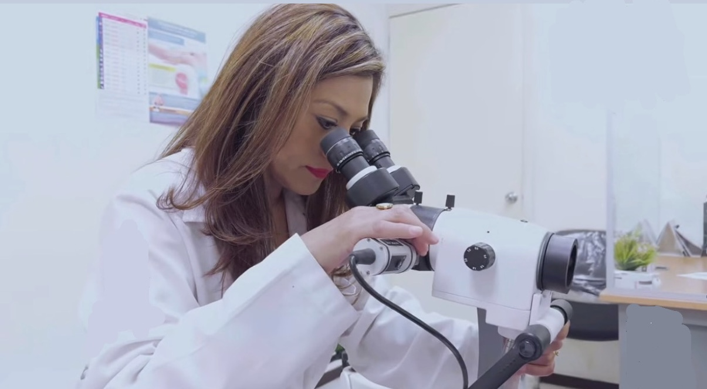
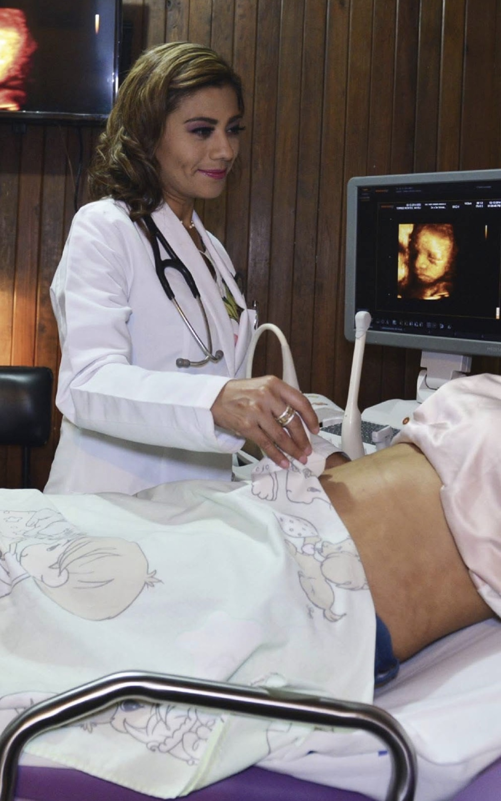

Galería
Espacios diseñados para brindar comodidad, privacidad y confianza.




Acompañamos a la mujer en cada etapa de su vida, ofreciendo diagnóstico, prevención y tratamiento con tecnología moderna y un enfoque humano.
Agendar cita
La Dra. Yanet Aranda es especialista en Ginecología y Obstetricia con más de 20 años de experiencia en salud femenina. Su práctica se centra en la atención integral, la prevención y el acompañamiento personalizado. Ofrece cita en su consultorio médico privado.
Se formó como Médico Cirujano en la Universidad Autónoma de Guadalajara (UAG) y después realizó la Especialidad en Ginecología y Obstetricia avalada por la Universidad Nacional Autónoma de México (UNAM). Es médico certificado por el Colegio Mexicano de Ginecología y Obstetricia desde el año 2007. Cuenta con múltiples diplomados en áreas como laparoscopia, colposcopia, detección de enfermedades de mama, laser (rejuvenecimiento vaginal, eliminación de estrías, entre otras).
Atención integral para el bienestar y la salud de la mujer.
Valoración completa, chequeo anual y prevención de enfermedades de la mujer.
Control de embarazo y prevención de enfermedades durante el mismo.
Seguimiento del embarazo con ultrasonido y atención especializada. Detección de quistes y miomas.
Visualización del cervix para el diagnóstico oportuno de lesiones premalignas.
Detección oportuna de células cervicales malignas.
Biopsia de mama, biopsia de endometrio y biposia cervical.
Extracción de un tejido cervical probablemente maligno.
Método anticonceptivo subdérmico.
Extracción del método anticonceptivo.
Aplicación vaginal de dispositivo intrauterino.
Plata o Cobre
Extracción vaginal de dispositivo intrauterino.
Cuando no es posible visualizar los hilos para la extracción del DIU, requiere maniobras especiales.
Se recomiendan 3 dosis de la vacuna para la prevención del VPH.
Aplicación vaginal de dispositivo intrauterino (No Hormonal).
Aplicación vaginal de dispositivo intrauterino con hormona.
Destrucción con calor del tejido maligno.
Espacios diseñados para brindar comodidad, privacidad y confianza.


La confianza de nuestras pacientes es nuestra mejor recomendación.
"La doctora brinda una atención muy profesional, amable y hace que te sientas en confianza desde la primera consulta y el resultado del tratamiento me ha ayudado"
Grendy M."Me gustó mucho la consulta, te explica todo de manera detallada y su trato es muy humano."
A.G."Excelente, muy amable, desde un inicio me escuchó y explicó claramente mi diagnóstico resolviendo todas mis dudas"
Jennifer S.Agenda una consulta y recibe una valoración integral en un ambiente seguro y confidencial.
Enviar WhatsAppVisítanos en nuestro consultorio.